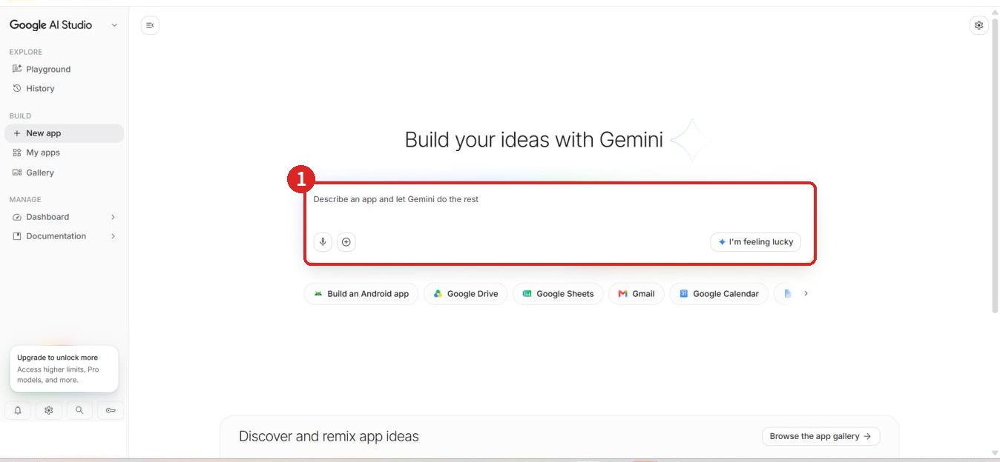
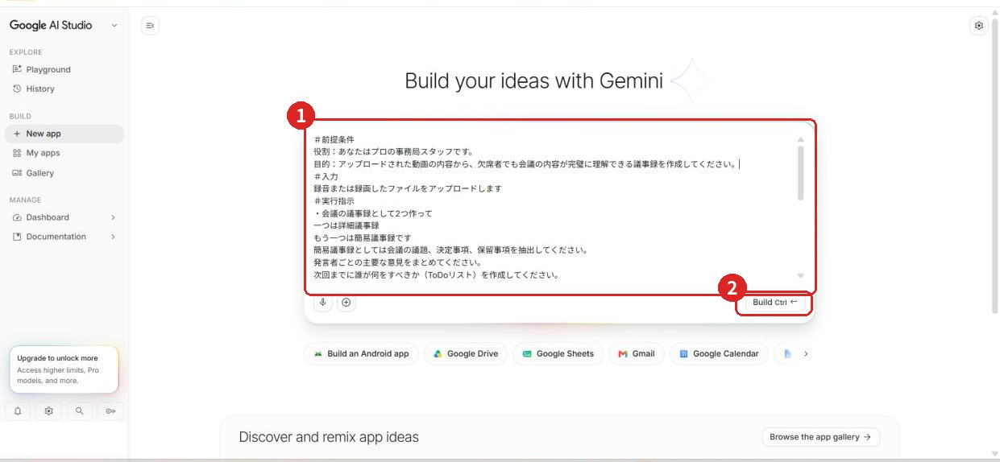
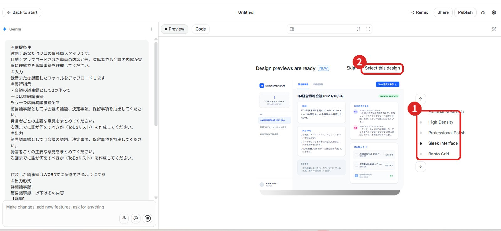
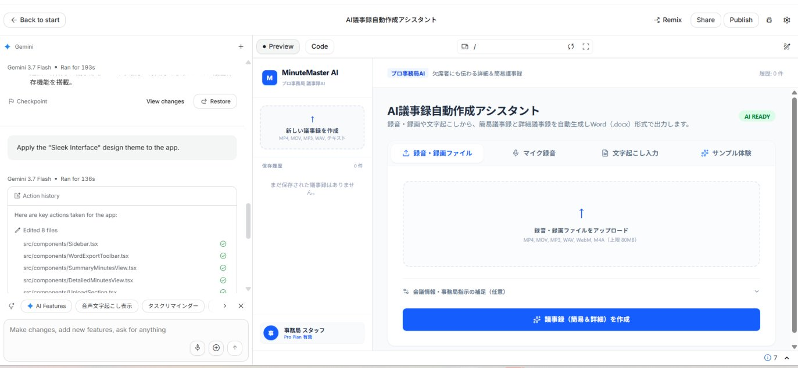
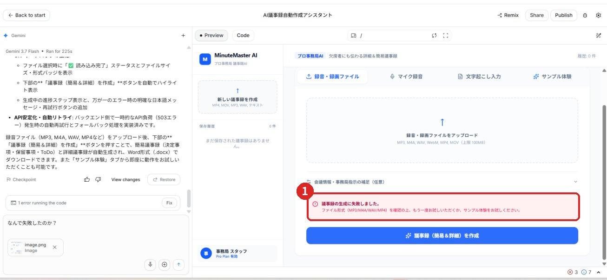
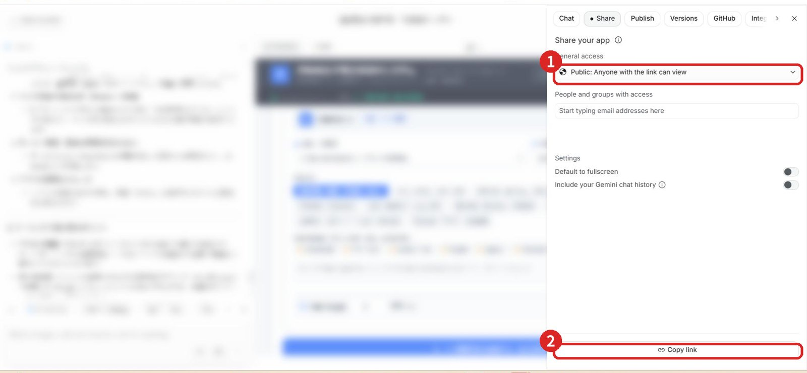
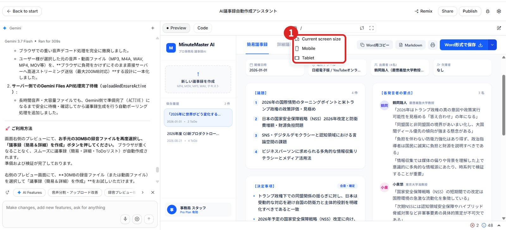

集合研修 第2回演習問題（予習用）
ミニアプリ構築編（Google AI Studio）。集合研修の前に、内容の確認と予習ができます。
📌 このページの使い方
・演習の手順・見本のプロンプト・操作画面を、ここで確認できます。見本のプロンプトは「📋 コピー」ボタンでコピーできます。
・黄色の記入欄に書いた内容は、このパソコン（ブラウザ）に自動で保存されます。ほかの端末には引き継がれません。
・集合研修の当日の成果物は、Googleドライブ「04集合研修用」フォルダの中の、自分の班のフォルダ（1班〜6班）に保存します。
📁 Googleドライブ「04集合研修用」フォルダを開く
📝 この資料の進め方
① 各演習は「やること」→「手順」→「見本」→「確認ポイント」の順に書いてあります。上から順に進めてください。事前に読んでおくと、当日がスムーズです。
② 8＋1の項目のうち、必ず書くのは「＃実行指示」だけです。ほかの項目は、必要だと思うものを選んで足します。
③ 黄色の「✍️」の欄は下書き用です。いきなり画面に入力せず、まずここに書き出してから見直してください。
④ 灰色の枠は「見本」です。先に自分で書いてみて、行き詰まったら参考にしてください。そのままコピーして使うこともできます。
⑤ 赤い番号が付いた画像は操作画面です。番号の順にクリック・入力してください。
⑥ 「任意」の演習は、時間があるときに取り組んでください。
📌 8＋1の法則 早見表（必須は実行指示だけ）
【入力設計】
＃前提条件（どんな場面か）／＃役割定義（AIにどんな担当者として考えてほしいか）／＃対象者（誰向けか）／＃参考情報（使ってほしい材料）／＃実行指示（してほしい作業。★必須）
【出力設計】
＃品質条件（文字数・項目数など）／＃出力形式（メール・箇条書き・表など）／＃文体・トーン（ていねい・簡潔など）
【＋1】
＃禁止事項（避けてほしいこと）／＃専門視点／＃追加条件
★ 全部を書く必要はありません。必要だと思う項目だけを足します。
〇 ミニアプリ構築編
📌 第1回で終わらなかった演習について
第1回の「Gemini Notebook 応用編」が終わらなかった場合は、第2回の最初に、第1回の演習問題の応用編の続きから行います。
Google AI Studio（aistudio.google.com）の「Build」機能を使って、自社の「課題を解決できる作業」をAIミニアプリにします。成果物は、「04集合研修用」フォルダの中の、自分の班のフォルダに保存してください。
📌 進め方（班の判断で決めてください）
アプリを「メンバー1人ずつ個別に作る」か、「班で1つ（または複数）を共同で作る」かは、各班の判断にお任せします。発表は班単位で1つ選んで行うので、進めやすい形で構いません。
S1 アプリのアイデアを固める
STEP1 まず、自社の課題からアプリを考える
事前に考えてきたアプリの内容が自社の課題に合っていれば、STEP1はスキップして、STEP2に進んでください。
💡 事前に考えておくこと（確認）
・自社で「毎回時間がかかる・面倒な」業務は何か
・その業務をアプリにするなら、「何を入力して、何が出力されれば理想か」
・アプリ名（仮）
アイデアが浮かばない場合は、次の手順を試してください。
①下の見本をコピーして、「【 】」の部分を自社の内容に書き換え、Geminiに入力します。
見本のプロンプト（自社の課題から、アプリのアイデアを出してもらう）
＃前提条件
私は【業種】の【役職】です。【自社の課題を具体的に。例：お客様からのクレーム対応にいつも時間がかかり、対応がスタッフによってバラバラ】という課題があります。
＃実行指示
この課題を解決する対策を3つ提案してください。それぞれの対策が、AIアプリ（入力すると自動でほしい結果が出るツール）にできそうかどうかも教えてください。
②出てきた対策案の中から、「ミニアプリにできそうなもの」を選びます。
③選んだ対策が、次の「アプリ化すべき業務の条件」に当てはまるかを確認します。
✅ アプリ化すべき業務の条件
① 繰り返し：週1回以上、または月数回以上の頻度で発生するか
② 複数人：自分以外にも使う人がいるか
③ 定型：入力と出力のパターンが、ある程度決まっているか
さらに、効果が大きいか（費用面・工数面）、誰でも使えるか、使いやすいか、も考えてみましょう。
STEP2 アプリの内容を掘り下げる（要件定義）
STEP1で考えた対策（ミニアプリ）の概要ができたら、さらに具体的にします。次の「要件定義」（アプリの設計図にあたるもの）を、下の表に書いてください。
| 項目 | 書くこと | 自分の記入欄 |
|---|
| ① 何をするアプリか | 目的や、解決したい業務 | |
| ② 入力する項目 | 氏名／日付／金額／カテゴリ など | |
| ③ 出力・結果 | 一覧表示／合計の計算／生成した文章・画像 など | |
| ④ 必要な機能 | 保存したい／AIに書かせたい／通知・メールを送りたい | |
| ⑤ 誰が・いつ・どこで使うか | 利用シーン（使う人・場面） | |
S2 Google AI Studioでアプリを作る 80分
Googleが提供するAIアプリ開発ツールです（無料。Googleアカウントで使えます）。「Build」機能の入力欄に、作りたいアプリの要件定義の内容を入力します。
STEP1 Google AI Studioにアクセスする
①aistudio.google.com にアクセスします（Googleアカウントでログインします）。
②左側のメニューで「New app」（Build）が選ばれていることを確認します。
③画面中央の入力欄（画像の①）が、作りたいアプリの内容を書く場所です。
【画像】Google AI Studioのトップ画面。①の入力欄に、作りたいアプリの内容を入力します。

【画像】Google AI Studioのトップ画面。①の入力欄に、作りたいアプリの内容を入力します。
STEP2 Buildのプロンプトを書く
Buildの入力欄が、アプリの頭脳になります。STEP2の要件定義で考えた内容を、文章にして入力します。8＋1の項目のうち、必須なのは「＃実行指示」（アプリがやること）です。ほかの項目は、必要なものを足してください。「＃」の見出しは、付けても付けなくても構いません。
📌 書く内容
・＃実行指示（必須）：アプリがやること。ユーザーが何を入力して、アプリが何をするのかを、番号を付けて順番に書きます
・＃前提条件：誰が使うか、どんな課題を解決するアプリか（課題は背景の説明にとどめます）
・＃出力形式：結果の見せ方・見た目のイメージ（見出し、表、コピーボタンなど）
・＃禁止事項：アプリにさせてはいけないこと・注意点（入力にない事実を付け足さない、など）
見本のプロンプト（クレーム対応サポートアプリの例）
＃前提条件
接客スタッフ全員が使う、クレーム対応サポートアプリです。クレーム対応に時間がかかり、対応がスタッフによってバラバラという課題があります。
＃実行指示
ユーザーは、クレームで聞いた内容のメモを入力します。アプリは次の3つを行ってください。 ①要点を3行でまとめる ②初動対応を2〜3つ提示する ③上司への報告メッセージを作成する
＃出力形式
結果を、「要点」「初動対応」「報告メッセージ」の3つの見出しで画面に表示してください。報告メッセージには、コピーボタンを付けてください。
＃禁止事項
入力されていない事実を付け足さないでください。
アイデアが出ない場合は、Geminiに「〇〇業の〇〇です。Google AI Studioで『〇〇』を作りたいです。入力：〇〇、出力：〇〇。Buildに入力するプロンプトを書いてください」と相談しても構いません。
書けたら：Buildを実行する
①書いたプロンプトを、画面中央の入力欄（画像の①）に貼り付けます。
②右下の「Build（Ctrl＋Enter）」ボタン（画像の②）をクリックして、アプリの生成を始めます（数分かかります）。
【画像】プロンプトを貼り付けた状態。②の「Build」ボタンでアプリの生成を始めます。

【画像】プロンプトを貼り付けた状態。②の「Build」ボタンでアプリの生成を始めます。
💡 Buildの画面の見方
最初は、中央に大きな入力欄（作りたいアプリの内容を、自然な文章で書く場所）が表示されます。
Buildを実行すると、左側が「Gemini」との会話欄（アプリの追加・修正を指示する場所）、右側が「Preview」（実際に動くアプリの画面）になります。
③生成の途中で「Design previews are ready」と表示されたら、右側の5つのデザインの中から、好きなものを選びます（画像の①）。選んだら「Select this design」（画像の②）をクリックします。
【画像】デザインの選択画面。①でデザインを選び、②の「Select this design」をクリックします。

【画像】デザインの選択画面。①でデザインを選び、②の「Select this design」をクリックします。
④アプリの生成が終わると、右側にアプリの画面が表示されます。
【画像】アプリが生成された画面。右側のPreviewで、実際に動かして確認します。

【画像】アプリが生成された画面。右側のPreviewで、実際に動かして確認します。
STEP3 テストして改善する
①右側の「Preview」画面で、STEP2で決めた「入力するもの」に沿った入力例（架空のデータで構いません）を、実際にアプリに入力して、動作を確認します。
②エラーになったり、出力が期待と違ったりした場合は、左側の「Gemini」との会話欄（「Make changes, add new features, ask for anything」と書かれた欄）に、日本語で修正を依頼します。
💡 エラーが出たときは
エラーの画面（画像の①）が出たら、左側の会話欄に、「なぜ失敗したのか」「このエラーを直してください」のように送ります。画面のスクリーンショットを貼り付けて送ることもできます。
Geminiが修正するので、アプリが思い通りに動くまで、会話欄に修正依頼を繰り返します。
【画像】エラーが出た画面。①のエラーの内容を、左の会話欄でGeminiに伝えて直してもらいます。

【画像】エラーが出た画面。①のエラーの内容を、左の会話欄でGeminiに伝えて直してもらいます。
STEP4 URLを発行して共有する
アプリが完成して、社内や班で共有したいときは、次の手順で進めます。
②「General access」を「Public: Anyone with the link can view」にします（画像の①）。
③「Copy link」（画像の②）をクリックして、共有用のURLをコピーします。
【画像】共有の設定画面。①で「Public」を選び、②の「Copy link」でURLをコピーします。

【画像】共有の設定画面。①で「Public」を選び、②の「Copy link」でURLをコピーします。
④コピーしたURLを、共有する人のチャット（LINEなど）に送ります。受け取った人は、各自のパソコンでURLを開いて、動作を確認します。
⑤スマートフォンで使うアプリの場合は、プレビューの画面サイズの切り替え（画像の①）で、「Mobile」の見え方を確認します。
【画像】画面サイズの切り替えメニュー。①から「Mobile」「Tablet」を選んで、見え方を確認します。

【画像】画面サイズの切り替えメニュー。①から「Mobile」「Tablet」を選んで、見え方を確認します。
🚀 早く終わったら（班全員がSTEP4を完了した場合）：S1の企画で、ほかにも思いついた業務課題があれば、2つ目・3つ目のミニアプリも、STEP1〜4と同じ手順で作ってみましょう。1つ目より短い時間で作れるはずです。
S3 班内選考・発表準備 （任意：時間次第で短縮）
STEP1 班内で全員のアプリをデモする
班員が各自でアプリを作った場合は、各自が自分のアプリをメンバーにデモします。
✅ 選考基準
・実際の業務で使える「リアルさ」があるか
・入力が簡単で、誰でもすぐ使えそうか
・出力が、そのまま業務で使える成果物になっているか
・アプリがあることで、時間・手間がどれだけ減るか
STEP2 班の代表アプリを1つ選ぶ
班で話し合い、上の選考基準を使って、アプリを1つ選んでください。
STEP3 アプリ発表の準備・発表
| 発表の順番 | 内容 | メモ（自分の記入欄） |
|---|
| ① 会社・業種・課題（15秒） | どんな会社で、どんな課題があるか | |
| ② アプリの説明と実演（2分） | アプリの内容と、実際に動かして見せる | |
| ③ 期待する効果（30秒） | 時間・手間・品質がどう良くなるか | |
| ④ 今後やりたいこと・感想（30秒） | これから取り組みたいこと、今日の感想 | |
✅ 発表チェックリスト（発表前に確認）
・アプリのURL（またはAI Studioの画面）を、すぐ開ける状態にしている
・デモ用のサンプル入力テキストを、手元に用意している
・発表内容（①〜④）を頭に入れている
・業務手順書がある場合は、見せる準備ができている
📝 最後に
お疲れさまでした。最後に、【研修後】終了後アンケートへのご記入をお願いします。